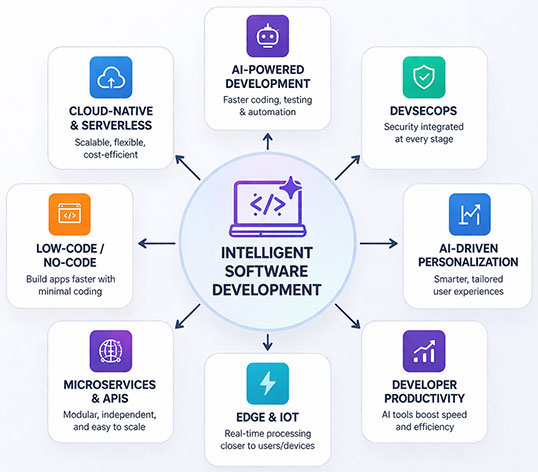
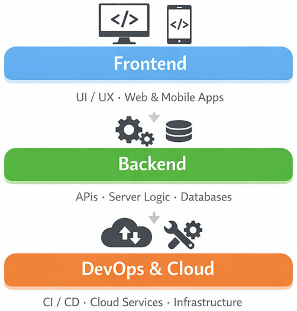

Why Software Development is Rapidly Evolving in 2026
Software development in 2026 is no longer confined to writing code—it has evolved into building intelligent, scalable, and automated systems that directly drive business outcomes.
Several forces are driving this transformation:
- Artificial intelligence has become a foundational layer within the development lifecycle, enabling automation across coding, testing, and deployment. Organizations are increasingly leveraging AI-driven software solutions and intelligent automation services to stay competitive.
- Market expectations for faster product delivery have intensified, pushing companies to adopt agile, AI-augmented workflows to reduce time-to-market.
- Cloud-native infrastructure has become the standard, allowing businesses to scale applications dynamically while optimizing cost and performance.
- Cybersecurity threats have grown more sophisticated, making integrated security practices essential across the development lifecycle.
👉 The shift is clear: Businesses are moving from traditional development models to AI-powered, speed-driven engineering ecosystems.
Key Statistics Driving Software Development Trends
- AI-assisted development can reduce coding effort by 30–50%
- Developers report significant time savings in repetitive tasks
- A majority of enterprises are integrating AI into development workflows
- Cloud-native adoption continues to grow across industries
👉 Insight: Software development is shifting from manual execution → intelligent orchestration
Top Software Development Trends in 2026

1. AI-Powered Software Development Becomes the Default
Artificial intelligence is transforming software development into a collaborative process between humans and machines. Developers now rely on AI to generate code, identify bugs, automate testing, and optimize performance.
Organizations adopting AI development services for intelligent software solutions are able to significantly enhance engineering efficiency and innovation.
👉 Business Outcome: Faster development cycles, reduced manual effort, and increased focus on high-value problem-solving.
2. Rise of Autonomous AI Agents
AI systems are evolving into autonomous agents capable of executing multi-step workflows independently. These agents can manage tasks such as testing, deployment, and performance optimization.
👉 Business Outcome: Reduced operational overhead and improved productivity across development teams.
3. Low-Code / No-Code Development Goes Mainstream
Low-code platforms enable faster application development by allowing teams to build software with minimal coding effort. This empowers non-technical stakeholders to participate in product development.
👉 Business Outcome: Accelerated innovation and reduced dependency on large engineering teams.
4. Cloud-Native & Serverless Architecture Dominates
Modern applications are built to scale from day one using microservices and serverless computing. Businesses can leverage AI consulting services for cloud-native transformation strategies to modernize their infrastructure.
👉 Business Outcome: Improved scalability, flexibility, and cost efficiency.
5. API-First & Microservices Architecture
Applications are increasingly modular, allowing independent services to be developed, deployed, and scaled efficiently.
👉 Business Outcome: Faster updates and improved system resilience.
6. DevSecOps Becomes Standard Practice
Security is now integrated into every stage of development. Businesses are adopting automated security testing and monitoring tools.
👉 Business Outcome: Reduced vulnerabilities and stronger compliance.
7. Progressive Web Apps (PWAs) Continue to Rise
PWAs deliver app-like experiences through browsers, offering a cost-effective alternative to native applications.
👉 Business Outcome: Lower development costs and broader accessibility.
8. AI-Driven Personalization in Applications
Applications are becoming more intelligent, adapting dynamically to user behavior. Companies can implement generative AI development services for personalization and automation to enhance user experience.
👉 Business Outcome: Higher engagement and improved retention.
9. Edge Computing & IoT Expansion
Processing data closer to users reduces latency and improves performance, especially for real-time applications.
👉 Business Outcome: Better performance and new product opportunities.
10. Developer Productivity Becomes a Core Metric
Organizations are increasingly measuring developer output, efficiency, and speed using AI tools and analytics.
👉 Business Outcome: Improved operational efficiency and competitive advantage.
Old vs New Software Development Approach
| Aspect | Traditional Approach | Modern AI-Driven Approach (2026) |
|---|---|---|
| Development Process | Manual coding and testing | AI-assisted coding and automation |
| Speed of Delivery | Longer release cycles | Rapid, continuous deployment |
| Scalability | Limited, infrastructure-heavy | Cloud-native and serverless |
| Security | Post-development testing | Integrated DevSecOps |
| Collaboration | Siloed teams | Cross-functional, AI-supported teams |
| Decision Making | Based on limited data | Data-driven, real-time insights |
| Innovation | Slower experimentation | Rapid prototyping and iteration |
👉 Key Insight: The shift is not incremental—it is a complete transformation of how software is built and delivered.
Why Most Companies Fail to Adopt These Trends
While these trends are widely discussed, many organizations struggle with execution.
- AI is often implemented in isolated use cases rather than integrated across workflows, limiting its overall impact. Businesses need a holistic approach using AI consulting services for enterprise adoption
- Lack of clearly defined business use cases leads to poor ROI, as companies focus on technology instead of outcomes.
- Legacy systems and outdated infrastructure make integration difficult, slowing down transformation efforts.
- Organizations fail to measure impact effectively, resulting in stalled initiatives.
- Resistance to change within teams prevents adoption, highlighting the need for training and cultural alignment.
👉 Key Takeaway: Successful adoption requires a structured, business-first implementation strategy.
Real-World Case Studies
Shopify – Accelerating Development with AI
Shopify has integrated AI into its development workflows to streamline product development and enhance merchant experiences.
- Faster feature releases
- Improved backend efficiency
- Better scalability for merchants
👉 Key Insight: AI accelerates the entire product lifecycle—not just coding.
Netflix – Personalization at Scale
Netflix leverages AI-driven systems to personalize content recommendations and optimize user experience.
- Majority of user engagement driven by recommendations
- Continuous UI/UX optimization
👉 Key Insight: Software today is about continuous optimization, not just deployment.
Microsoft – AI-Driven Developer Productivity
Microsoft integrates AI into developer tools, enabling automation of coding and debugging tasks.
- Improved developer efficiency
- Faster product releases
👉 Key Insight: The future lies in human + AI collaboration.
Summary Table: Trends & Business Impact
| Trend | What It Enables in Practice | Business Outcome |
|---|---|---|
| AI Development | Automates coding and testing | Faster delivery |
| AI Agents | Executes workflows | Higher productivity |
| Low-Code | Rapid app development | Lower costs |
| Cloud-Native | Scalable infrastructure | Flexibility |
| Microservices | Modular architecture | Faster updates |
| DevSecOps | Integrated security | Reduced risk |
| PWAs | Cross-platform apps | Cost efficiency |
| Personalization | Smart UX | Higher engagement |
| Edge Computing | Real-time processing | Better performance |
| Productivity Focus | AI-driven output | Competitive advantage |
Visual Diagram: Modern Software Development in 2026

How Businesses Should Adapt
To stay competitive:
- Identify high-impact AI opportunities within your workflows
- Transition to scalable, cloud-native architectures
- Invest in automation and DevOps practices
- Focus on measurable productivity improvements
Organizations can accelerate this journey by partnering with an AI development company for scalable software solutions and leveraging AI consulting services for digital transformation
FAQs
AI-powered development is the most significant trend, transforming how software is built and deployed.
By starting with high-impact use cases and leveraging AI consulting services for implementation strategy
No, but it is evolving rapidly with AI and automation augmenting developer capabilities.
AI automates coding, testing, and optimization, enabling faster and more efficient development processes.